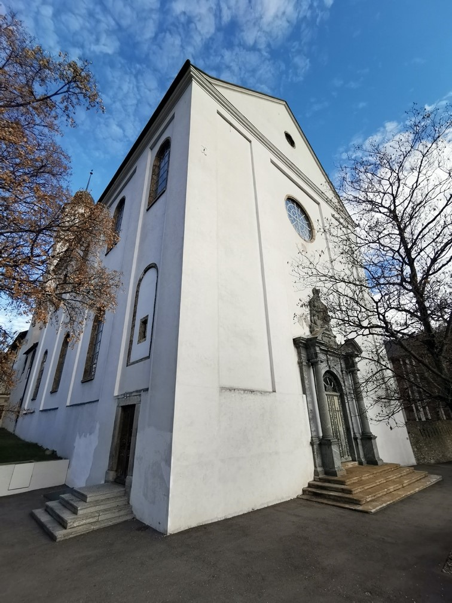
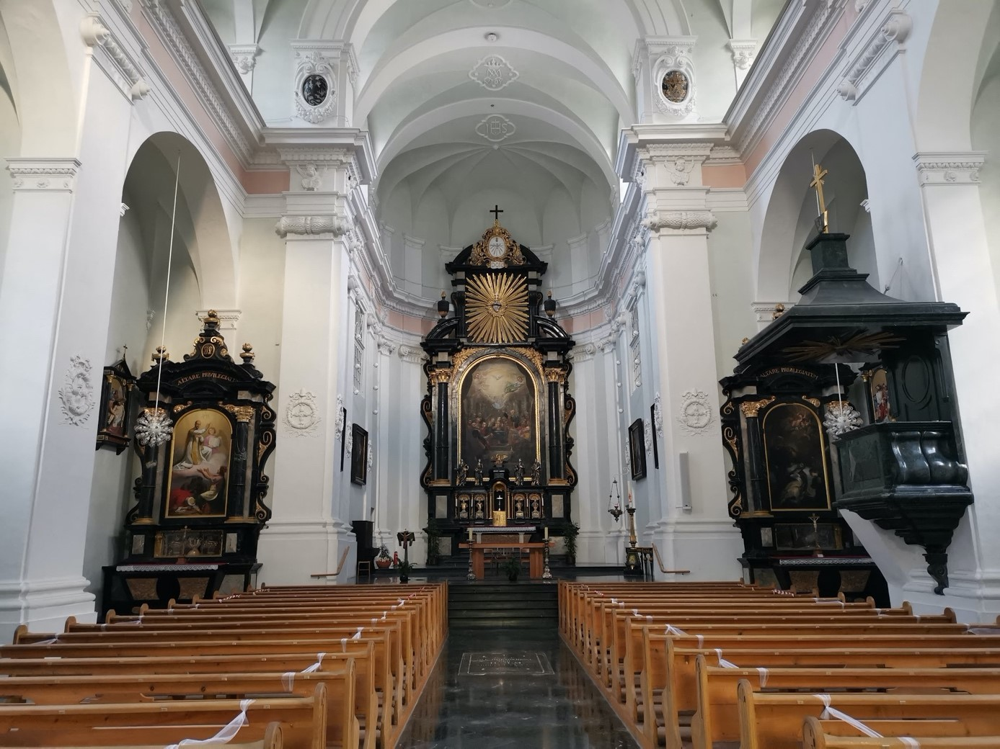
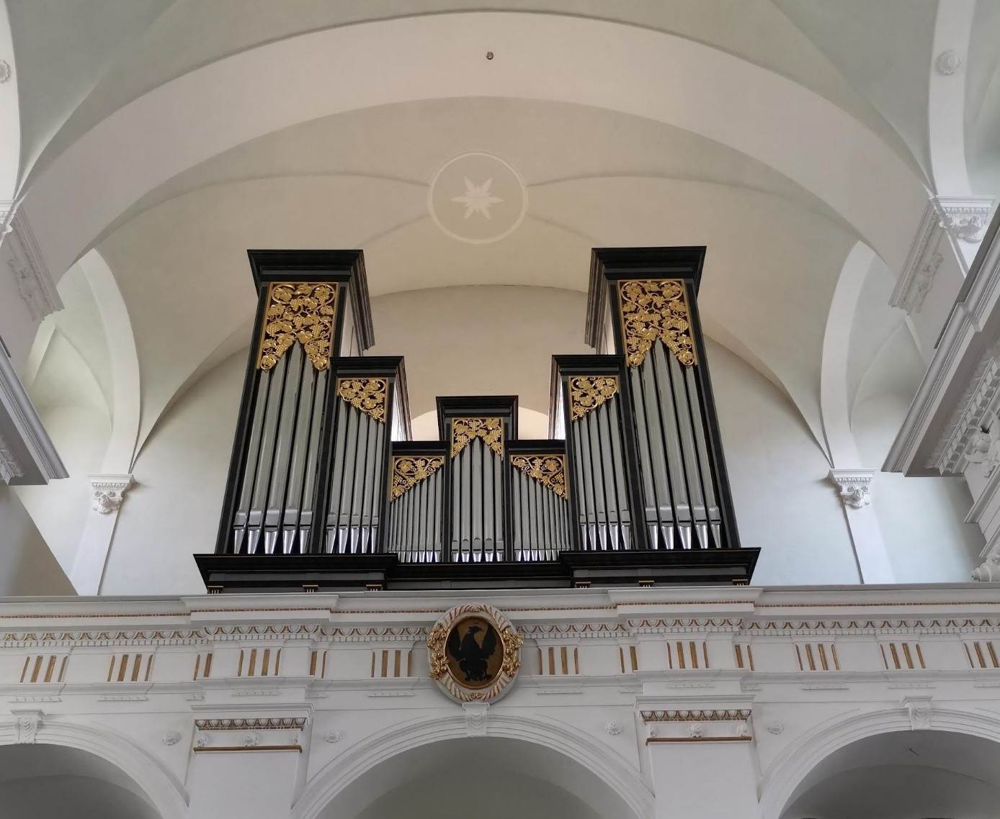

Der barocke Ursprung
Er war ein bisschen der Bill Gates seiner Epoche: Kasper Jodok Stockalper Baron vom Thurm (1609–1691). Er raffte ein enormes Vermögen zusammen, war aber auch (oder vielleicht gerade deshalb) um sein Seelenheil besorgt. Daher war er ein grosser Förderer der Kirche und der Schulen im Oberwallis. 1662 halfen seine Millionen, die Jesuiten zu motivieren, in Brig ein Kolleg für die studierende Oberwalliser Jugend zu errichten. 1673–1687 wurde die dazu gehörige Kirche errichtet, welche noch heute über Brig thront. Wer freilich eine Kirche in barockem Prunk erwartet (oder befürchtet), wird eines Besseren belehrt. Am 14. September 1787 ging das Innere der Kirche in Flammen auf und als die Franzosen unter Napoleon 1798 in die Schweiz und ins Wallis einmarschierten, wurde die Kirche als Pferdestall missbraucht. Von diesen Verwüstungen ist aber nichts mehr zu sehen. Die hohe, weisse Kirchensilhouette auf dem Hügel über dem Stockalperpalast dominiert strahlend das Stadtbild von Brig. Umgeben ist die Anlage von einer Bruchsteinmauer mit Schiessscharten, welche die Franzosen 1812 gegen die anrückenden Truppen errichteten. Man kann sich vorstellen, dass die Internatsschüler noch heute Spass daran haben.
Die Kirche gehört zum Kollegium Spiritus Sanctus von Brig und wird auch von diesem Gymnasium, dem einzigen im Oberwallis, genutzt. Lange war sie auch eine Art Ersatz für die fehlende Pfarrkirche von Brig – die stolzen Briger mussten jeweils in die Gliser Wallfahrtskirche zur Messe gehen, was nicht allen passte. Da die Briger aber nun eine eigene Pfarrkirche haben, ist es wieder ruhiger geworden in dieser wunderschönen Jesuitenkirche.
Kollegiumskirche (Jesuitenkirche) zum Heiligen Geist, Brig. (Bild: Gerd Dönni)
Die Kirche als Herzstück des Kollegiums
Bis in die 60er Jahre des 20. Jahrhundert war für alle Internen des Kollegiums der morgendliche Messbesuch obligatorisch. Die zum grossen Teil geistlichen Lehrer feierten dann an den Seitenaltären ihre Privatmessen, da vor dem II. Vatikanischen Konzil (1962–1965) alle Priester täglich und jeder für sich die Messe zelebrieren sollten. Dies war bei einer grossen Anzahl Priester nur möglich, wenn nicht nur der Hauptaltar benutzt werden konnte. Die Schüler wussten genau, welcher der Priester im Stakkato seine Messe feierte; bekannt war dafür Don Antonio di Francesco, der Italienischlehrer und Mitschüler von Papst Johannes XXIII. Sein südländisches Temperament war auch als Zelebrant spürbar. Gebetet wurde in dieser Kirche viel – es gab auch fast täglich Andachten («Gut-Tod-Andacht», «Aloysius-Andacht» für die Reinheit und vieles mehr), und das Internat war denn auch über Jahrhunderte eine Pflanzstätte für geistliche Berufungen.
Kollegiumskirche (Jesuitenkirche) zum Heiligen Geist, Brig. (Bild: Gerd Dönni)
Der künstlerische Wert
Wer heute die Kirche besucht, wird dort keine Schüler mehr frühmorgens in der Messe vorfinden. Der tägliche Gottesdienst – auch als fakultatives Angebot – musste gestrichen werden. Umso mehr kann das Auge auf der Innenausstattung der Kirche verweilen. Im Hochaltar ist die Niederkunft des Hl. Geistes in der Gestalt von Feuerflammen auf die Apostel und die Muttergottes zu sehen (in der Bibel nachzulesen in Apostelgeschichte 2, 1ff), darüber eine Darstellung des Herzens Jesu, dessen Verehrung vom Jesuitenorden besonders gefördert worden ist, biblisch grundgelegt im Johannesevangelium (19,34, das durchbohrte Herz des Gekreuzigten, aus dem Blut und Wasser fliessen, als Symbol für die Kirche mit ihren Sakramenten). Für die Schüler, die immer noch gerne in der Kirche als Ort der Stille und Besinnung weilen, ist der rechte Seitenaltar immer ein Faszinosum. Das vollständige Skelett des Heiligen Auxilius ist dort zu bewundern, eines Katakombenheiligen. Im Stil der Zeit wurden die Gebeine unbekannter Heiliger aus den Katakomben, den unterirdischen Grabstätten der frühen Christen, vom 17. – 19. Jahrhundert entfernt und reich mit Gold und Edelsteinen geschmückt in Kirchen zur Verehrung platziert. Der Heilige Auxilius wurde dem Kollegium von einer habsburgischen Erzherzogin geschenkt – eventuell, weil einer ihrer Lehrer ein Jesuit von Brig war und sein Unterricht so staubtrocken wie die Knochen?
Auf einem anderen Seitenaltar begegnet man der symbolischen Darstellung der vier Kontinente, zu welchen der Jesuitenorden den römisch-katholischen Glauben bringen wollte. Vier Kontinente? Gibt es da nicht mehr? Natürlich, aber Australien wurde von James Cook erst 1770 entdeckt, und da war dieses Altarbild eben schon gemalt.
Viel gerätselt wird über ein Wappen, dass sich bei der Orgelempore befindet. Ist es das Wappen der freien „république rhodanienne“, eines Marionettenstaates von Napoleons Gnaden (1802–1810)? Wenn Walliser mal wieder von der Unabhängigkeit von der Üsserschwiiz träumen, werden dort Kerzchen angezündet, so sagt man.
Kollegiumskirche (Jesuitenkirche) zum Heiligen Geist, Brig. (Bild: Gerd Dönni)
Die Bedeutung der Kirche heute
Patronatsfest der Kirche ist Pfingsten – wenn die Christen der Aussendung des Heiligen Geistes gedenken. Nach dem Festgottesdienst werden alle Gläubigen vom Kollegium zu einem Apéro eingeladen. Ein typisch walliserischer Brauch, in dem sich römisch-katholischer Glaube, Tradition und Freude an gutem Essen und auch einem guten Wein mischen. Gäste sind immer willkommen.
Auf jeden Fall lohnt sich ein Besuch dieser Kirche, die geheiligt worden ist von Jahrhunderten von Weihrauch, Schülerschweiss, Gebet und Kerzenduft.
Dr. Gerd Dönni ist Prorektor am Kollegium Spiritus Sanctus in Brig
Zur Vertiefung:
- Carmela Kuonen Ackermann: Die Kollegiumskirche zum Heiligen Geist in Brig, Bern 1995.